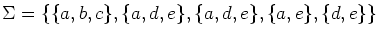

Answer all questions.
| TO | |||||||
| s | 1 | 2 | 3 | 4 | t | ||
| s | -- | 3 | 2 | 100 | 100 | 100 | |
| 1 | 100 | -- | -2 | 3 | 100 | 100 | |
| FROM | 2 | 100 | 4 | -- | 2 | 6 | 100 |
| 3 | 100 | 100 | 100 | -- | 3 | -4 | |
| 4 | 100 | 100 | -4 | 100 | -- | -8 | |
| t | 100 | 100 | 100 | 100 | 100 | -- | |
(So, for example, the length of the arc from node s to node 2 is 2. `--' indicates the corresponding edge does not exist.)
Let aik be the length of the shortest path from s to i which uses at most k edges. How would you calculate aik+1?
We find as3=0, a13=3, a23=1, a33=3, a43=7, and at3=0. What are ai4, i=s,1,2,3,4,t?
For example:
Let T={a,b,c,d,e}.
If then (c,d,e,a) is an SDR for .
However, if  then there does not exist an SDR for .